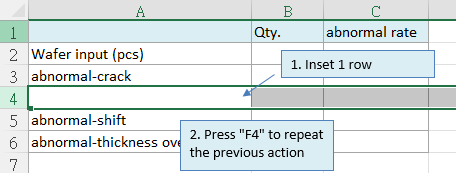
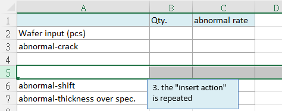
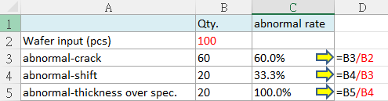
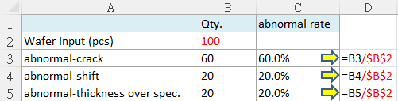

豪拜兒|掌握Excel快捷鍵：用F4重複動作與執行絕對參照功能

今天，我們要分享 Excel 中非常方便且實用的快捷鍵 F4。這個快捷鍵具備兩大功能：“重複之前動作”和“切換公式中的相對參照與絕對參照”。這兩個功能不僅簡單易用，而且能極大地提升你的工作效率，讓你在處理 Excel 任務時事半功倍。
在日常的 Excel 操作中，無論是進行數據輸入、格式設置，還是編輯公式，我們經常需要重複某些特定的動作。手動重複這些操作不僅耗時，而且容易出錯。此時，快捷鍵 F4 的“重複之前動作”功能就能派上用場。只需按一下 F4 鍵，Excel 便會自動重複你上一次的操作，無需再次手動執行，節省了大量時間和精力。
除了重複動作，快捷鍵 F4 另一個非常實用的功能是“切換公式中的相對參照與絕對參照”。在編寫 Excel 公式時，我們常常需要使用相對參照（如 A1）和絕對參照（如 $A$1）。相對參照會隨著公式的拖動而改變，而絕對參照則固定不變。手動切換這些參照格式雖然可行，但快捷鍵 F4 能讓這一過程變得更加高效。只需選中公式中的參照單元格，按下 F4，Excel 便會在相對參照和絕對參照之間進行切換，幫助你快速完成公式編寫。
這兩大功能對於需要頻繁操作 Excel 的用戶來說，無疑是提高效率的利器。無論你是數據分析師、會計師，還是日常需要使用 Excel 進行報表製作的任何人，掌握並善用快捷鍵 F4，都能讓你的 Excel 工作變得更加輕鬆高效。
接下來，我們將深入講解如何利用快捷鍵 F4 進行這兩項操作。希望通過這篇教學文章，能夠幫助你更好地掌握這個實用的技巧，從而在日常工作中獲得更高的效率。快來一起學習並應用這個神奇的快捷鍵吧！
功能一：重複之前的動作
F4鍵的第一個功能是“重複之前的動作”。假設您需要在表格中插入多行，通常我們會右鍵點選插入功能。如果您已經插入了一行，接著還需要插入更多行，只需按下F4鍵，即可重複插入行的動作，而不必重新右鍵選擇插入。
具體步驟
- 右鍵點選需要插入的位置，選擇“插入”。
- 完成插入動作後，按下F4鍵，即可自動重複插入動作。


功能二：切換相對參照與絕對參照
F4鍵的第二個功能是“切換公式中的相對參照與絕對參照”。這在公式運算中非常有用。
使用F4切換參照方式
當我們在公式中按下F4，可以看到公式中出現“$”符號。這個符號表示鎖定，具體表現如下：
- A$1：鎖定第1行。
- $A1：鎖定A列。
- A1：行列都不鎖定。
- $A$1：行列都鎖定
具體案例：計算產品不良率
不良率的計算公式是“異常品數量/總投入數量”。我們將以此作為範例，介紹如何使用F4鎖定參照。
- 在C3儲存格中輸入公式=B3/B2。
- 使用下拉儲存格的自動填充功能將公式填充到C4、C5等儲存格。 此時會發現，C4、C5的公式並不正確，因為分母已經隨著行數變動而位移。為了解決這個問題，需要鎖定分母的B2。

- 鎖定分母步驟：
- 在C3儲存格中輸入公式時，點選分母B2。
- 按下F4鍵，將B2變為絕對參照，即$B$2，將分母鎖定於B2。
- 再次執行自動填充，發現C4、C5等儲存格的分母鎖定在B2，得到正確的運算。 以下是鎖定後的正確公式示例：
=B3/$B$2
=B4/$B$2
=B5/$B$2

希望這些快捷鍵和技巧能夠幫助您在Excel中更高效地工作。掌握這些功能，您將能夠大大提升數據處理的速度和準確性。
為什麼需要學習 Excel？難道不可以依賴 AI 工具嗎？
過去，學習 Excel 不僅能提升數據處理和分析能力，還能顯著提高工作效率。掌握各種 Excel 公式和 VBA 技巧，可以有效提升工作效率，通過自動化功能減少重複性工作。此外，熟練掌握 Excel 也能增加就業競爭力，因為許多職位，尤其是在財務、數據分析和行政等領域，都將其視為基本要求。
隨著 AI 技術的問世，與 AI 工具合作的情況下，我們可能不再需要從零開始編寫公式或 VBA 程式。例如，免費版的 ChatGPT-3.5 能生成和解釋 Excel 中的常見公式，如 SUM、VLOOKUP、IF 等，並幫助解決基本的數據處理問題。付費版的 ChatGPT-4.0 在公式生成和解釋方面同樣出色，能更好地處理複雜的公式和多步驟的數據分析任務，並提供更精確的幫助，還能協助生成各類型的圖表。
然而，對於 Excel 完全不熟悉的人，仍然難以與 AI 有效溝通並驗證結果。因此，小編認為，為了更好地與 AI 協作，對 Excel 的基本了解仍然是必要的。建議可以參考以下Hahow學習資源：
為什麼選擇 Hahow 線上課程平台？
Hahow 是一個受歡迎的線上課程平台，提供各種專業課程。選擇 Hahow，可以享受靈活的學習方式，隨時隨地都可以學習，非常適合忙碌的工作人士。平台上的課程由專業講師授課，內容豐富且實用。還可以與其他學員交流學習心得，共同進步。相比坊間動輒上萬元的課程，Hahow 的線上課程不僅省去交通的舟車勞頓，更有價格實惠的絕對優勢。